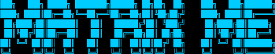

Matrix Me Terminal v2.1.0
Copyright (c) 2025 Matrix Me Project
All rights reserved.
━━━━━━━━━━━━━━━━━━━━━━━━━━━━━━━━━━━━━━━━━━━━━━━━━━━━━━━━━━
AI DNA 스캔 시스템 초기화 중...
［░░░░░░░░░░░░░░░░░░░░░░░░░░░░░░░░░］ 0%
시스템 준비 완료.

당신의 AI 활용 유형을 16가지 중에서 정확히 진단합니다.
20개의 질문을 통해 당신의 AI DNA를 분석하세요.
언어 선택 / Language Selection:
[1]
한국어로 진단 시작 (Korean)
[2]
Start Diagnosis in English